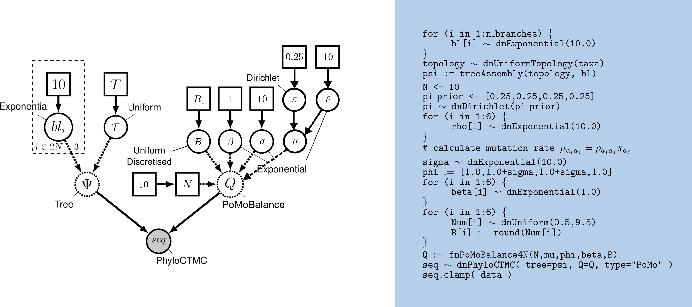
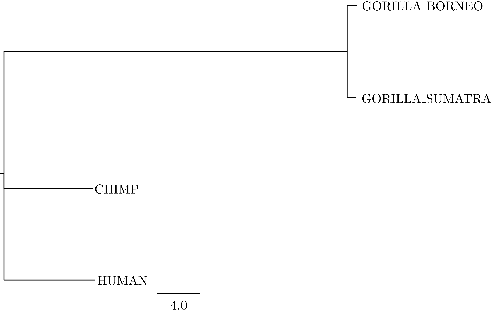

This tutorial is based on Polymorphism-aware phylogenetic models so we recommend you to go through it first.
NB! Please note that the current version of the code has been tested in the development version of RevBayes built from the dev_PoMo_bs_master branch. PoMoBalance will be added to the main functionality in the next release.
The polymorphism-aware phylogenetic models with balancing selection (PoMoBalance) is a natural extension of polymorphism-aware phylogenetic models (De Maio et al. 2013; De Maio et al. 2015; Schrempf et al. 2016; Borges et al. 2019; Borges et al. 2022; Borges et al. 2022) including all previous capabilities as well as detection of preferred allele frequencies and strength of balancing selection as shown in .
In the transition rates from the monomorphic states are defined with mutation rates $\mu_{a_ia_j}$ and $\mu_{a_ja_i}$, while the transition rates from the polymorphic states are defined with \(\Phi_n^{a^{\mp}_{i,j}}= \frac{n(N-n)}{N}(1+\sigma_{a_{i,j}})\beta_{a_ia_j}^{\frac{1}{2} [ |n-B_{a_ia_j}|-|n\mp 1-B_{a_ia_j}| +1 ]}, \label{equation1}\tag{1}\) where $1+\sigma_{a_{i,j}}$ represents fitness of corresponding alleles, $B_{a_ia_j}$ is a preferred frequency and $\beta_{a_ia_j}$ is a strength of balancing selection.
PoMoBalance in addition to standard PoMos allows one to
There are few functions implemented in RevBayes shown in .
| Function | Description | Parameters |
|---|---|---|
| fnPoMoBalanceKN | Describes the evolution of a population with $K$ alleles and $N$ individuals subjected to mutational bias, selection and balancing selection | $K$, $N$, $\mu$, $\phi$, $\beta$, $B$ |
| fnReversiblePoMoBalanceKN | Particular case of PoMoBalanceKN when mutations are considered reversible and the preferred frequency is in the middle $B=\frac{N}{2}$. | $K$, $N$, $\pi$, $\rho$, $\phi$, $\beta$ |
| fnPoMoBalance4N | Particular case of fnPoMoBalanceKN where $K=4$. | $N$, $\mu$, $\phi$, $\beta$, $B$ |
| fnReversiblePoMoBalance4N | Particular case of fnReversiblePoMoBalanceKN where $K=4$. | $N$, $\pi$, $\rho$, $\phi$, $\beta$ |
The DAG model representation of PoMoBalance is shown in .

Similarly to PoMos, we are using count files in the same format. File great_apes_BS_10000.cf contains an example of heterozygote advantage simulation with the preferred frequency in the middle in $4$ great ape populations performed with the evolutionary simulation framework SLiM (Haller and Messer 2019). We generated $10000$ sites, however, normally balancing selection happens in small regions containing only a few genes or around a thousand nucleotides. Thus, to improve the accuracy of the method we recommend increasing the virtual population size. In the current example, we use $N = 10$ and it can be further increased taking into account the interplay between the number of sites and the computational cost.
First, we convert the allelic counts into PoMo states. Open the terminal and copy the data and script into the corresponding subfolders data and scripts of your working directory, for example, call it, PoMoBalance. Inside PoMoBalance create output folder to store the results.
PoMo state-space includes fixed and polymorphic states. However, sampled fixed sites might not be necessarily fixed in the original population. We might just have been unlucky and only sampled individuals with the same allele from a locus that is polymorphic. It is typically the case that the real genetic diversity is undersampled in population genetic studies. The fewer the number of sampled individuals or the rarer are the alleles in the original population (i.e., singletons, doubletons), the more likely are we to observe fake fixed sites in the sequence alignment. The sampled-weighted method helps us to correct for such bias by attributing to each of the allelic counts an appropriate PoMo state (0-based coding). For a population size of 3 virtual individuals, we expect 16 states (coded 0-15), while for a population of 2 virtual individuals, we expected 10 states (coded 0-9).
The script weighted_sampled_method.cpp is implemented in C++, and we will run it using the Rcpp package in R. Open the counts_to_pomo_states_converter.R file and make the appropriate changes to obtain your PoMo alignments suited for PoMoBalance.
name <- "great_apes_BS_10000" # name of the count file
count_file <- paste0("../data/", name, ".cf") # path to the count file
n_alleles <- 4 # the four nucleotide bases A, C, G and T
N <- 10 # virtual population size
alignment <- counts_to_pomo_states_converter(count_file,n_alleles,N) # Create the alignment
writeLines(alignment,paste0("../data/", name, ".txt")) # writeg the PoMo alignment
We place the produced alignments inside the data folder. The output files follow the NaturalNumbers character type of RevBayes and can easily read by it.
Open the great_apes_pomobalance.Rev file using an appropriate text editor so you can follow what each command is doing. Then run RevBayes:
./rb great_apes_pomobalance.Rev
Note, you may use ./rb or the parallel version ./rb-mpi to speed up the calculations.
Further, let’s do through the commands in the script in more detail. We define the virtual population size and load the counts file similarly to PoMos.
N <- 10
data <- readPoMoCountFile(countFile="data/great_apes_BS_10000.cf", virtualPopulationSize=N, format="PoMo")
Information about the alignment can be obtained by typing data.
>data
PoMo character matrix with 4 taxa and 10000 characters
======================================================
Origination:
Number of taxa: 4
Number of included taxa: 4
Number of characters: 10000
Number of included characters: 10000
Datatype: PoMo
Next, we will specify the number of taxa, taxa names, and the number of branches.
n_taxa <- data.ntaxa()
n_branches <- 2*n_taxa-3
taxa <- data.taxa()
Also variable to store moves and monitors for our analysis. You can add multiple kinds of moves into this variable and better explore the parameter space with MCMC, to avoid local minima and correlation between the moves. Monitors are for tracking MCMC analysis.
moves = VectorMoves()
monitors = VectorMonitors()
Two main components are required for unrooted tree estimation with balancing selection:
Following PoMos, PoMoBalance is also defined with instantaneous-rate matrix, Q with population size N, allele frequencies pi, exchangeabilities rho (in the non-reversible case combined into mutations mu), and allele fitnesses phi. Frequencies must sum up to unity, thus, pi is initialised with Dirichlet distribution and the move is mvBetaSimplex
# allele frequencies
pi_prior <- [0.25,0.25,0.25,0.25]
pi ~ dnDirichlet(pi_prior)
moves.append( mvBetaSimplex(pi, weight=2) )
The rho and phi parameters must be positive real numbers and a natural choice for their prior distributions is the exponential distribution and the standard moves mvScale. Let’s add an adaptive variance multivariate-normal proposal move that uses MCMC samples to fit covariance matrix to parameters called mvAVMVN to sigma to avoid correlation between GC-bias and balancing selection coefficients
# exchangeabilities
for (i in 1:6){
rho[i] ~ dnExponential(10.0)
moves.append(mvScale( rho[i], weight=2 ))
}
mu := [pi[2]*rho[1], pi[1]*rho[1], pi[3]*rho[2], pi[1]*rho[2], pi[4]*rho[3], pi[1]*rho[3], pi[3]*rho[4], pi[2]*rho[4], pi[4]*rho[5], pi[2]*rho[5], pi[4]*rho[6], pi[3]*rho[6]]
# fitness coefficients
sigma ~ dnExponential(1.0)
moves.append(mvScale( sigma, weight=2 ))
moves.append(mvAVMVN(sigma) )
phi := [1.0,1.0+sigma,1.0+sigma,1.0]
The strength of balancing selection beta is also exponential and for the same reason as rho combines two kinds of moves. The preferred frequency B must be a discrete positive value between 0 and N, thus, we set up variable Num with a uniform prior and two kinds of standard movesmvSlide and mvScale with high weights to enhance exploration of parameter space. We round Num on each iteration to obtain discrete B
# Strengths of the balancing selection
for (i in 1:6){
beta[i] ~ dnExponential(1.0)
moves.append( mvScale( beta[i], weight=30 ) )
# Add this move to avoid a correlation between sigma and beta
moves.append(mvAVMVN(beta[i]) )
}
# The preferred frequencies of balancing selection
for (i in 1:6){
Num[i] ~ dnUniform(0.5,9.5)
moves.append( mvSlide( Num[i], weight=10 ) )
moves.append( mvScale( Num[i], weight=10 ) )
B[i] := round(Num[i])
}
We will set up the virtual PoMoBalance using the function fnPoMoBalance4N. You can check the input parameters of any PoMo function by typing its name right after the question mark: ?fnPoMoBalance4N.
# rate matrix
Q := fnPoMoBalance4N(N,pi,rho,phi,beta,B)
Note, we could also use function fnReversiblePoMoBalance4N since the preferred frequency in our example is in the middle. However, we use more general function fnPoMoBalance4N to test the estimation of preferred frequency B.
The estimation of tree moves is also identical to PoMos including the nearest-neighbour interchange move mvNNI.
# topology
topology ~ dnUniformTopology(taxa)
moves.append( mvNNI(topology, weight=2*n_taxa) )
Nest, we define 2*n_taxa−3 with standard moves.
# branch lengths
for (i in 1:n_branches) {
branch_lengths[i] ~ dnExponential(10.0)
moves.append( mvScale(branch_lengths[i]) )
}
Finally, we combine the tree topology and branch lengths in treeAssembly in deterministic node psi
psi := treeAssembly(topology, branch_lengths)
Let’s combine Q and psi into a distribution called the phylogenetic continuous-time Markov chain dnPhyloCTMC
sequences ~ dnPhyloCTMC(psi,Q=Q,type="PoMo")
and clamp it to data
sequences.clamp(data)
Finally, we create the model function using any node.
pomo_model = model(pi)
Let’s set up monitors to track MCMC analysis
monitors.append( mnModel(filename="output/great_apes_pomobalance.log", printgen=10) )
monitors.append( mnFile(filename="output/great_apes_pomobalance.trees", printgen=10, psi) )
monitors.append( mnScreen(printgen=10) )
Run burn-in tuning the weights of the parameters
pbalance_mcmc.burnin(generations=2000,tuningInterval=200)
Finally, set up mcmc moves with four independent MCMC runs to ensure proper convergence and mixing.
pomo_mcmc = mcmc(pomo_model, monitors, moves, nruns=4, combine="mixed")
and run
pomo_mcmc.run( generations=10000 )
Use software Tracer or the R package Convenient to assess trajectories and convergence. Look at output/great_apes_pomobalance.log in Tracer. There you see the posterior distributions of the parameters and correlations between parameters.
Another way to assess the accuracy of parameter estimation is to look at the site frequency spectra (SFS) as shown in

To obtain the tree we need to look at the tree trace file
trace = readTreeTrace("output/great_apes_pomobalance.trees", treetype="non-clock", burnin= 0.2)
The mapTree function will summarise the tree samples and write the maximum a posteriori (MAP) tree to the specified file. The MAP tree can be found in the output folder named great_apes_pomobalance_MAP.tree as in .
mapTree(trace, file="output/great_apes_pomobalance_MAP.tree" )

Please note that if PoMoBalance struggles to estimate balancing selection and species trees simultaneously, it is possible to estimate the tree with PoMos first and then run PoMoBalance with the fixed tree or the tree topology.
With as your guide, draw the probabilistic graphical model of the reversible PoMoBalance model.
Run an MCMC analysis to estimate the posterior distribution under the reversible PoMoBalance model. Which one estimates the strengths of balancing selection better?
Compare the MAP trees estimated under the reversible and nonreversible PoMoBalance model. Are they equal, and if not, how much do they differ?